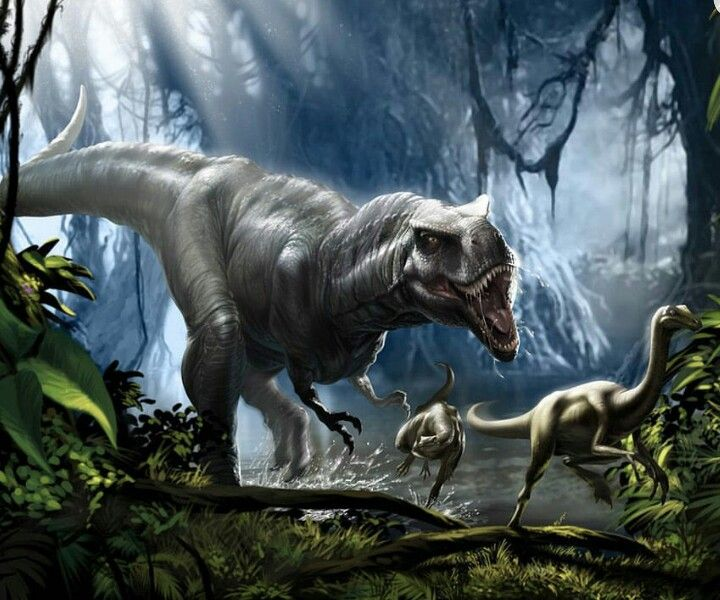

Tarbosaurus
Bạo chúa miền Viễn Đông kỷ Phấn trắng
Tổng quan
Kỷ
Cretaceous
Họ
Tyrannosaurinae
Chi
Tarbosaurus
Dài
10 m
Cao
3.5 m
Nặng
6 tấn
Thức ăn

Tarbosaurus là một chi khủng long chân thú thuộc họ Tyrannosauridae từng phát triển mạnh ở châu Á trong khoảng 70 đến 65 triệu năm trước, vào Hậu Phấn trắng.
Nguồn: wikipedia.org
Phân bố
Khu vực châu Á
Thông tin thêm về Tarbosaurus
Tên khoa học
Được đặt tên bởi nhà cổ sinh vật học người Nga Evgeny Maleev năm 1965. Tarbosaurus có nghĩa là "Thằn lằn báo động" hợp thành từ tiếng Hy Lạp cổ đại ταρβος/tarbos (có nghĩa là "khủng bố", "báo động", "khủng khiếp", hoặc "tôn kính") và σαυρος/sauros ("thằn lằn"), phát âm Tar-bow-SORE-us. Các nhà cổ sinh vật học hiện đại chỉ công nhận có một loài T. bataar là hợp lệ, tên định danh loài này xuất phát từ một lỗi chính tả trong tiếng Mông Cổ баатар/Baatar ("anh hùng").
Kích thước
Mặc dù có kích thước nhỏ hơn Tyrannosaurus nhưng Tarbosaurus vẫn là một trong những loài lớn nhất trong họ Tyrannosauridae. Kích thước lớn nhất được biết đến là dài khoảng 10 đến 12 mét (30 tới 40 ft) và trọng lượng từ 4 - 6 tấn (13.000 pound).
Ngoại hình
Hộp sọ của nó to và có hàm răng sắc nhọn và bộ hàm khỏe. Chiếc đuôi dày của Tarbosaurus giúp đối trọng với phần đầu và thân hình đồ sộ của nó.

Các chi trước của nó ngắn và chắc nịch, trong khi các chi sau của nó dài ra và cơ bắp, giúp nó có tốc độ và sự nhanh nhẹn đáng kể.
Chế độ ăn và săn mồi
Tarbosaurus được coi là động vật ăn thịt, có thể ăn xác chết cũng như săn mồi. Gần đây, một phân tích về hóa thạch của một con khủng long mỏ vịt, Parasaurolophus, đã tiết lộ nhiều vết cắn của Tarbosaurus và điều này cho thấy nó có thể ăn xác chết một cách có phương pháp hơn là săn lùng và giết chết nó.
Tarbosaurus có hàm răng sắc nhọn và bộ hàm khỏe, với cú đớp cực mạnh khoảng 35500 - 44500 N, có thể nghiền nát xương và rất thích hợp để xé thịt. Nó cũng có khứu giác nhạy bén, thứ có thể giúp nó định vị con mồi tiềm năng. Nhìn chung, Tarbosaurus là một kẻ săn mồi đáng sợ đóng vai trò quan trọng trong hệ sinh thái thời bấy giờ.
Kỷ nguyên
Tarbosaurus là một chi khủng long chân thú Theropoda lớn, thuộc họ Tyrannosauridae, có quan hệ rất gần với khủng long huyền thoại Tyrannosaurus rex (T. rex). Sống trong khoảng 70 đến 65 triệu năm trước, vào hậu kỷ Phấn trắng. Do xuất hiện trước nên có thể đây là một trong các tổ tiên của T. rex, Tarbosaurus có thể đã tiến hóa thành T. rex khi một vài cá thể vượt qua Siberia để vào Bắc Mỹ.
Phân bố
Là một trong các loài khủng long săn mồi lớn nhất sống trên cạn. Được cho là đã phân bố khắp nơi tại khu vực ngày nay là châu Á, tiêu biểu là Mông Cổ, Trung Quốc và Kazakhstan. Không có mẫu vật nào của Tarbosaurus được báo cáo bên ngoài châu Á.
Chúng sống ở vùng đồng bằng ngập nước ẩm ướt có các dòng sông chảy qua. Trong môi trường này, nó là loài ăn thịt hàng đầu, nằm ở đỉnh của chuỗi thức ăn.
Khám phá
Vào năm 1946, một đoàn thám hiểm gồm các nhà khoa học Xô Viết và Mông Cổ đã tìm được một phần hộp sọ và vài đốt sống của một loài khủng long ở hệ tầng Nemegt trong sa mạc Gobi thuộc miền nam Mông Cổ. Các mẫu vật này giống loài khủng long nổi tiếng T. rex đến mức người ta cho rằng đây là một loài cùng chi và được Evgeny Maleev đặt tên là Tyrannosaurus bataar năm 1955.
Kể từ đó đến nay đã tìm thấy hóa thạch của khoảng 30 cá thể thuộc loài này, trong đó có ít nhất 5 hộp sọ. Do có số lượng mẫu vật phong phú nên các nhà khoa học có điều kiện nghiên cứu sâu hơn về giải phẫu. Cuối cùng, họ nhận thấy rằng đây là một chi hoàn toàn tách biệt với Tyrannosaurus và bắt đầu gọi nó bằng cái tên phổ biến đến ngày nay là Tarbosaurus bataar.
Bản năng sát thủ
Tarbosaurus có lớp da rất dày, có thể đã được điều chỉnh để bảo vệ nó khỏi vết cắn của những kẻ săn mồi khác, chúng được cho là có thị lực tuyệt vời, giúp nó phát hiện ra con mồi tiềm năng từ xa. Ngoài ra, với đôi chân cứng cáp và khá dài, Tarbosaurus còn được cho là loài chạy nhanh, có khả năng đạt tốc độ lên đến 30 dặm một giờ.
Sự tuyệt chủng
Tarbosaurus là một trong những thành viên cuối cùng còn sống sót của gia đình khủng long bạo chúa. Tarbosaurus đã tuyệt chủng 65 triệu năm trước, cùng với tất cả các loài khủng long khác, do tác động của tiểu hành tinh gây ra sự kiện tuyệt chủng hàng loạt Cretaceous-Paleogene.
Mặc dù Tarbosaurus hiện đã tuyệt chủng, nhưng nó đã để lại một hồ sơ hóa thạch hấp dẫn giúp chúng ta hiểu về cuộc sống của những sinh vật cổ đại này.